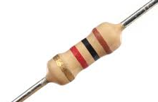
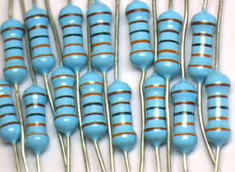
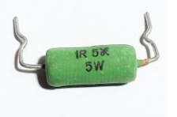
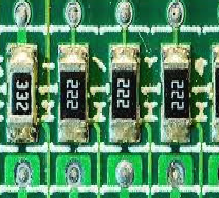

eletrônica básica
TIPOS DE RESISTORES
Os Tipos mais comuns de Resistores são:
Filme de Carbono
Filme Metálico
De Fio
SMD
Resistor de Filme de Carbono:
São usados para projetos onde a precisão não é tão importante.

Resistor de Filme Metálico:São usados em circuitos de maior precisão, por oferecer mais estabilidade.

Resistor de Fio:
São projetados para alta potência. Sendo confiáveis e robustos, em circuitos de carga elevada.

Resistor SMD (Surface Mount Device: Componente de montagem em superfície)
São componentes compactos, para montagem em superfície e onde possibilitam uma montagem de placas menores e mais leves, amplamente utilizada nos projetos atuais.

voltar